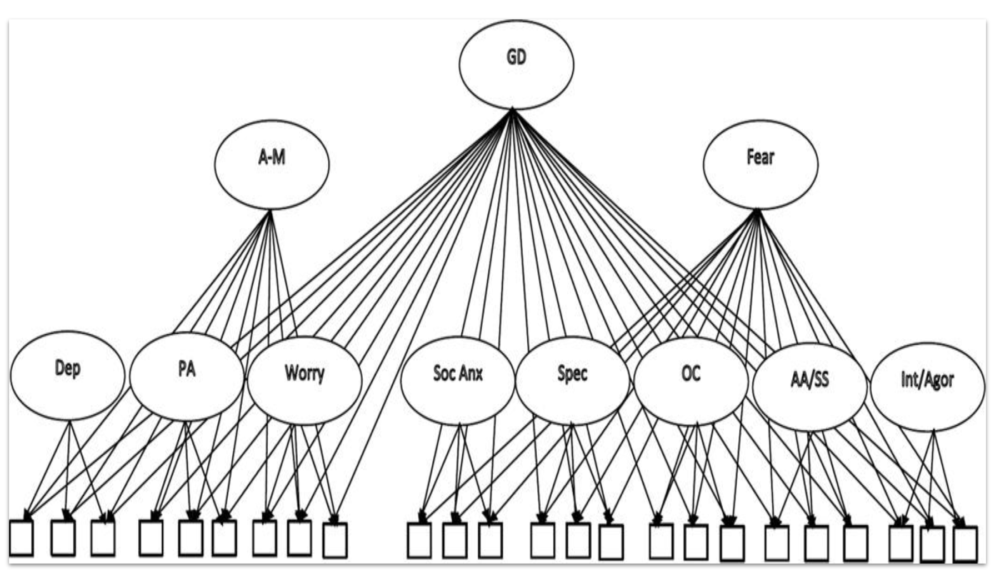
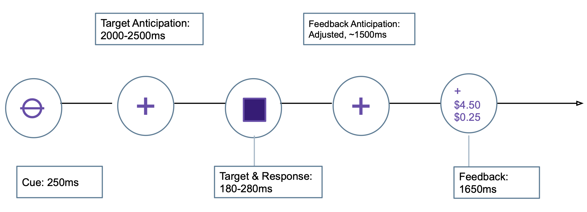
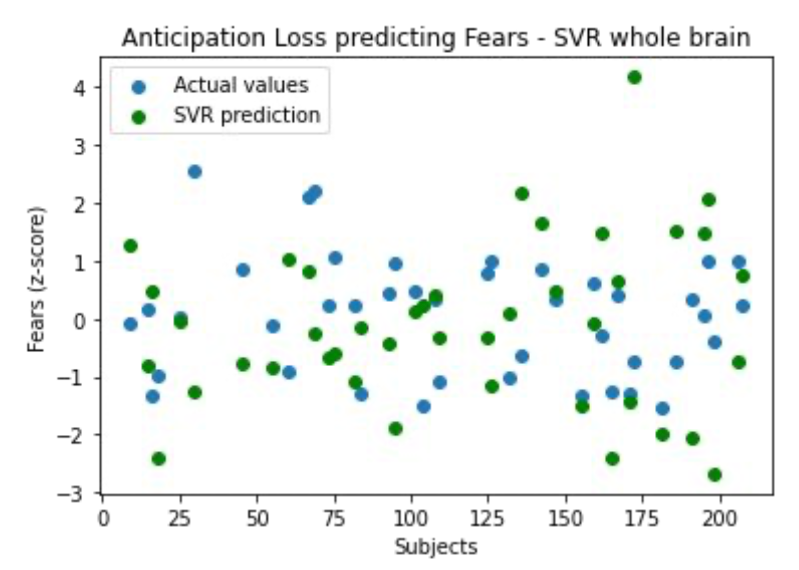
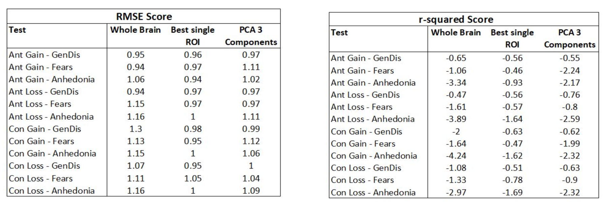
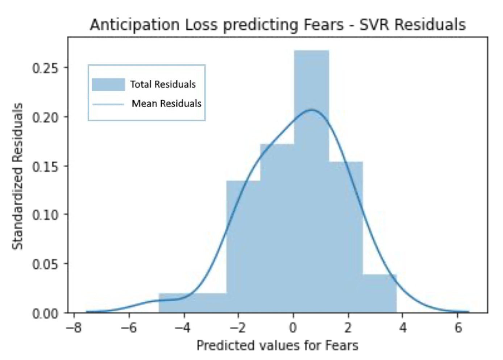
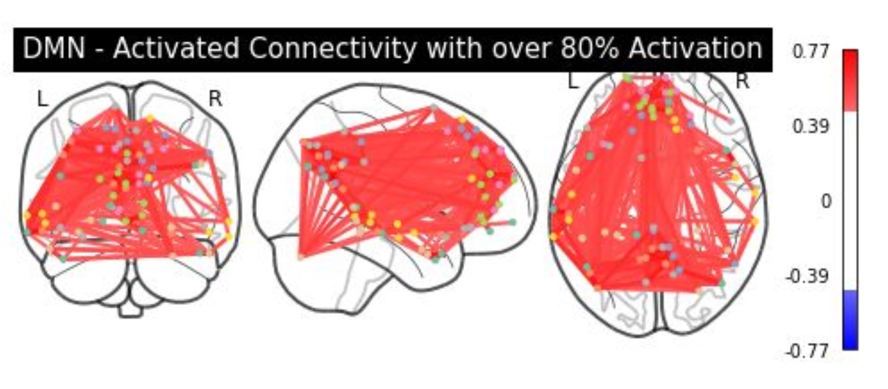

Predicting Dimensional Symptoms of Psychopathology from Task-Based fMRI using Support Vector Regression

00Overview
Can reward-related brain activity predict dimensional symptoms of anxiety and depression? Using SVR on whole-brain task fMRI from 209 people, the answer was no: linear models fit worse than a flat line, pointing toward targeted networks and non-linear methods.
Machine learning has been applied to disease diagnosis and treatment prognosis with structural and functional neuroimaging, but few studies have related task-based fMRI activation to symptom dimensions of anxiety and depression. Support vector regression (SVR), whose complexity doesn't depend on input dimensionality, offers a data-driven, multivariate approach with sensitivity to small effects. We trained SVR on fMRI from the Monetary Incentive Delay (MID) task to predict dimensional symptoms.
01Study design


02Results
Across 12 contrast × symptom tests, R² and RMSE were averaged over 10 folds. R² ranged from −4.24 to −0.65 for whole-brain tests and improved slightly, to −1.69 to −0.46, using only the single best-correlated ROI feature. Negative R² means a horizontal line at the mean predicts better than the fitted model.



03Where to go from here
